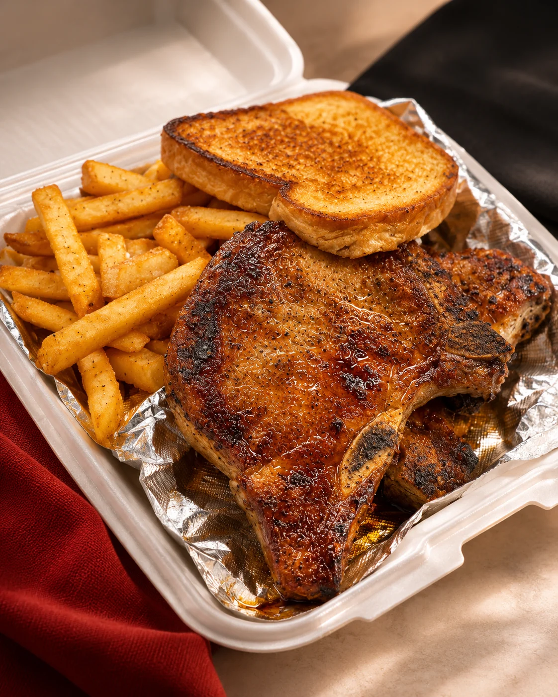
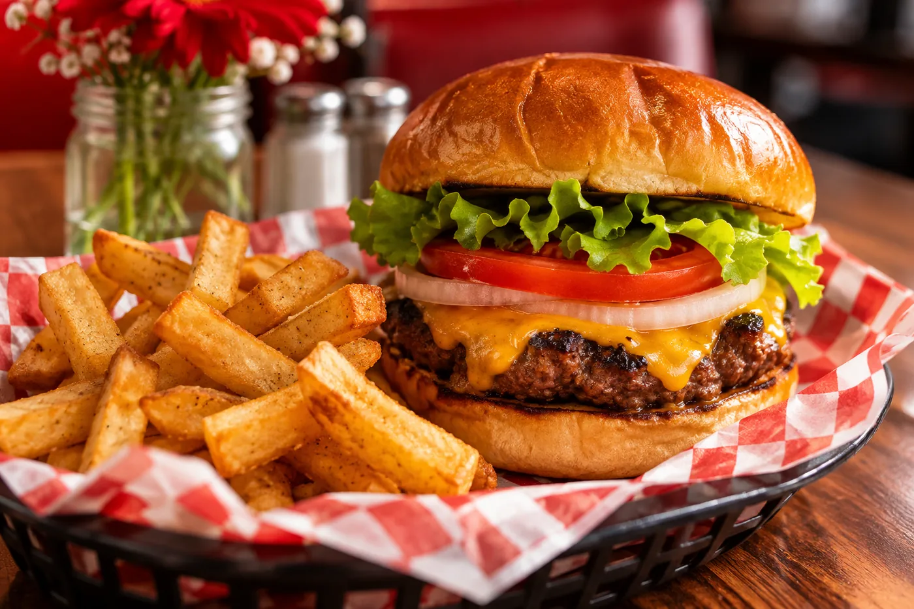
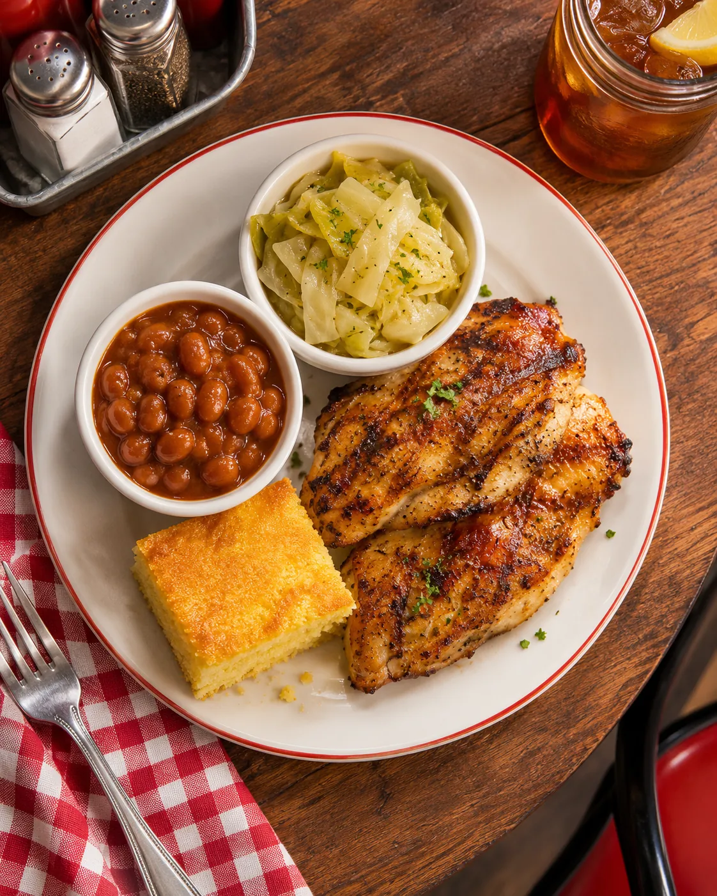
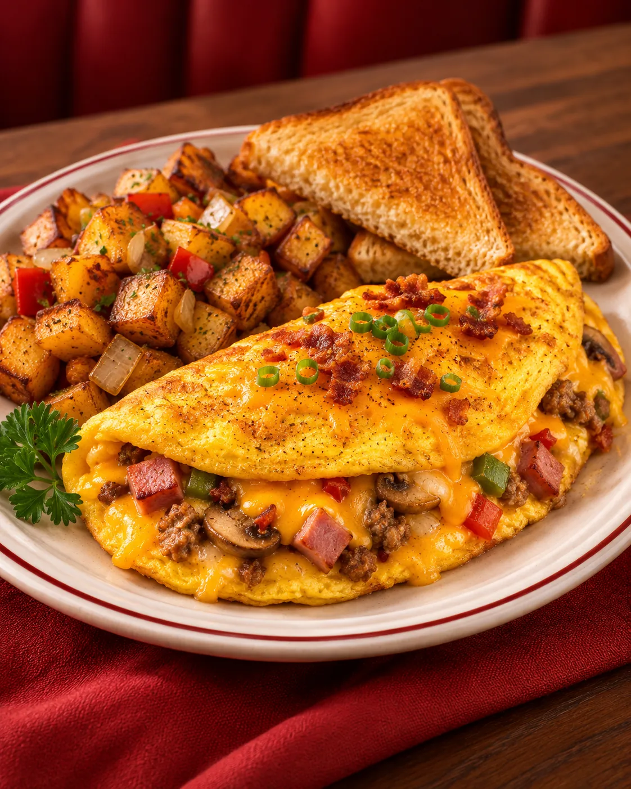
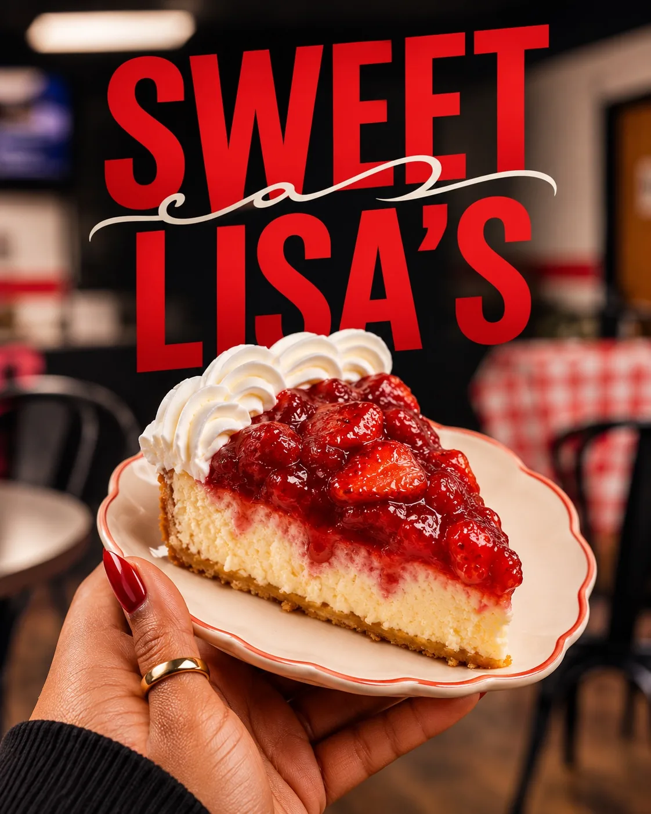
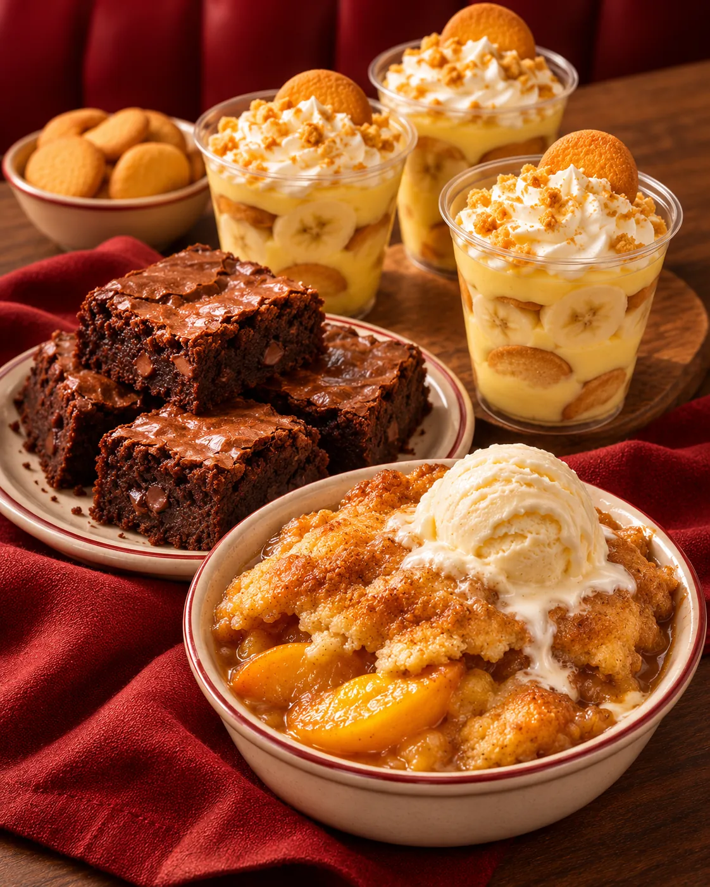
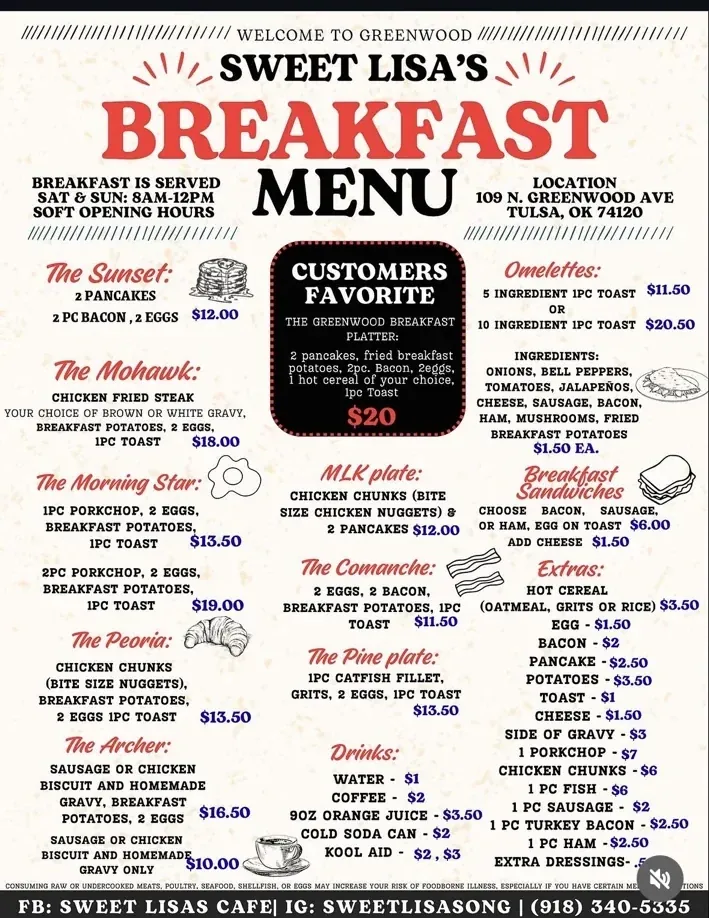

SOUTHERN FAVORITE
SOUTHERN FAVORITEMAINS
Fried Catfish
Catfish with a golden crust, styled with Southern sides.
 SOUTHERN FAVORITE
SOUTHERN FAVORITECatfish with a golden crust, styled with Southern sides.

FROM THE GRILLA hearty pork chop plate with comforting sides.

A CAFÉ FAVORITEJuicy cheeseburger with fresh toppings and crispy fries.
COMFORT CLASSICCrispy chicken with a thick golden slice of cornbread.

HOMESTYLE PLATEGrilled chicken served with home-style sides.
 MORNING FAVORITES
MORNING FAVORITESPancakes, bacon, eggs and toast in a generous breakfast spread.

MORNING FAVORITESA folded omelette with vegetables, cheese and breakfast sides.
 MORNING FAVORITES
MORNING FAVORITESToasted breakfast sandwich with bacon, egg and cheese.
 THE GOLDEN SIDE
THE GOLDEN SIDEGolden, tender cornbread, the ideal accompaniment to comfort food.

A SWEET FINISHA slice of strawberry-topped cheesecake in the café setting.

A SWEET FINISHA collection of Southern-inspired dessert cups and sweets.
 A LITTLE REFRESHMENT
A LITTLE REFRESHMENTRefreshing amber iced tea, photographed in the café-inspired setting.
FROM THE CAFE’S OWN POSTS
View the original breakfast flyer shared by Sweet Lisa’s in October 2025. Listed items, dates and prices are historical references and may have changed.

ARCHIVED / 2025